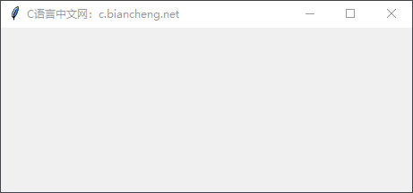
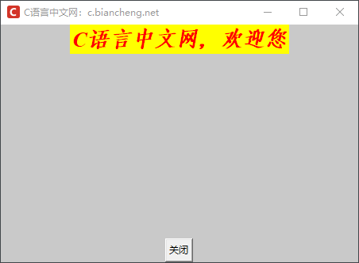

第一个Tkinter程序
本节使用 Tkinter 编写第一个 GUI 程序，通过对程序代码的详细解读来讲解 Tkinter 的编码逻辑，以及使用 Tkinter 过程中的一些注意事项。
上述四个步骤中，只有第三步属于 Tkinter 编程的重点，其余三个步骤属于固定的代码格式，如下所示：
上述代码创建了一个没有添加任何交互控件的 Tkinter 程序，它也是最简单的 GUI 程序。这里的主窗口相当于画板，其他的控件都要建立在主窗口之上。主循环也称“消息循环”或“事件循环”其的作用是让主窗口处于显示状态。
下面我们对上述程序做一下简单的改动，添加一些简单的交互控件（比如文本和按钮），代码如下所示：
在 Windows 系统下，我们可以使用 Python 解释器来运行程序文件，首先将程序文件保存至桌面，然后启动 Python 解释器，执行程序，如下所示：
如果想让程序独立的运行在 Windows 环境下，而不受 Python 解释器的影响，就需要将程序代码存储为
注意：程序中涉及的其他知识点（比如控件参数等）会在后续内容做详细介绍。
一个最简单的 Tkinter 程序至少应包含以下四个部分：- 导入 tkinter 模块
- 创建主窗口，也称 root 窗口（即根窗口）
- 添加人机交互控件，同时编写相应的事件函数
- 通过主循环（mainloop）来显示主窗口
上述四个步骤中，只有第三步属于 Tkinter 编程的重点，其余三个步骤属于固定的代码格式，如下所示：
# -*- coding:utf-8 -*-
import tkinter as tk
# 调用Tk()创建主窗口
root_window =tk.Tk()
# 给主窗口起一个名字，也就是窗口的名字
root_window.title('C语言中文网：c.biancheng.net')
#开启主循环，让窗口处于显示状态
root_window.mainloop()
程序运行后结果如下：

图1：程序运行结果
图1：程序运行结果
上述代码创建了一个没有添加任何交互控件的 Tkinter 程序，它也是最简单的 GUI 程序。这里的主窗口相当于画板，其他的控件都要建立在主窗口之上。主循环也称“消息循环”或“事件循环”其的作用是让主窗口处于显示状态。
下面我们对上述程序做一下简单的改动，添加一些简单的交互控件（比如文本和按钮），代码如下所示：
# -*- coding:utf-8 -*-
import tkinter as tk
root_window =tk.Tk()
# 设置窗口title
root_window.title('C语言中文网：c.biancheng.net')
# 设置窗口大小:宽x高,注,此处不能为 "*",必须使用 "x"
root_window.geometry('450x300')
# 更改左上角窗口的的icon图标,加载C语言中文网logo标
root_window.iconbitmap('C:/Users/Administrator/Desktop/favicon.ico')
# 设置主窗口的背景颜色,颜色值可以是英文单词，或者颜色值的16进制数,除此之外还可以使用Tk内置的颜色常量
root_window["background"] = "#C9C9C9"
# 添加文本内,设置字体的前景色和背景色，和字体类型、大小
text=tk.Label(root_window,text="C语言中文网，欢迎您",bg="yellow",fg="red",font=('Times', 20, 'bold italic'))
# 将文本内容放置在主窗口内
text.pack()
# 添加按钮，以及按钮的文本，并通过command 参数设置关闭窗口的功能
button=tk.Button(root_window,text="关闭",command=root_window.quit)
# 将按钮放置在主窗口内
button.pack(side="bottom")
#进入主循环，显示主窗口
root_window.mainloop()
程序的运行结果如下：

图2：程序运行结果
下面对上述示例进行简单的分析：
1) 主窗口设置
上述程序，主要对主窗口的大小、背景颜色以及左上角的 icon 图标进行了设置，这些代码简洁易读，很容易理解。2) 添加文本
上述程序中，我们添加了一行文本“C语言中文网，欢迎您”，此处使用了标签 Lable 控件来实现。需要注意的是，当成功创建标签（文本）对象后，必须使用 pack 方法将其放置在主窗口内（pack 方法又称窗口布局管理器）。主窗口是其他一切控件的基础，其他内容元素都要附着在主窗口上，就如同在一块画板上添加描述文字一样。下面再次回顾一下放置文本的代码：
# 添加文本标签，text参数指定内容
text=tk.Label(root_window,text="C语言中文网，欢迎您",bg="yellow",fg="red",font=('Times', 20, 'bold italic'))
# 将标签对象放置在主窗口内
text.pack()
3) 添加按钮
添加按钮的逻辑和添加文本标签类似，值得注意的是，按钮控件通过command参数实现了“关闭窗口”功能，代码如下：
# 添加按钮 button=tk.Button(root_window,text="关闭",command=root_window.quit) # 这里将按钮放置在主窗口的底部 button.pack(side="bottom")Tkinter 提供了十余种常用类型的控件，每个控件都有相应的属性，比如颜色（前景色/背景色/颜色常量）、文本内容、字体样式、控件大小、控件样式、控件命令等等，这些会在后续内容做详细介绍。
4) 独立运行tkinter程序
上述程序是在 IDLE 环境下运行的，但如果脱离了开发环境，怎么做才能让 Tkinter 程序独立运行呢？在 Windows 系统下，我们可以使用 Python 解释器来运行程序文件，首先将程序文件保存至桌面，然后启动 Python 解释器，执行程序，如下所示：
C:\Users\Administrator>python C:\Users\Administrator\Desktop\hello.py上述方法需要依赖于 Python 解释器，当我们关闭解释器窗口时，GUI 程序也随之关闭。
如果想让程序独立的运行在 Windows 环境下，而不受 Python 解释器的影响，就需要将程序代码存储为
.pyw文件，并使用 Pythonw.exe 来执行程序，如下所示：C:\Users\Administrator>pythonw.exe C:\Users\Administrator\Desktop\hello.py执行后，当我们关闭控制台窗口时（即执行程序的 CMD 界面），GUI 程序不会随之而关闭，而是独立地显示在桌面上。
希望大家可以将本篇文章通读几遍，相信您一定会大有收获，这为后续知识的学习打下坚实的基础。
关注公众号「站长严长生」，在手机上阅读所有教程，随时随地都能学习。内含一款搜索神器，免费下载全网书籍和视频。

微信扫码关注公众号